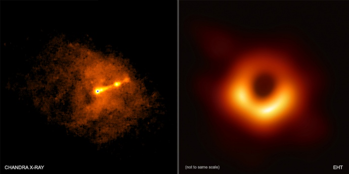
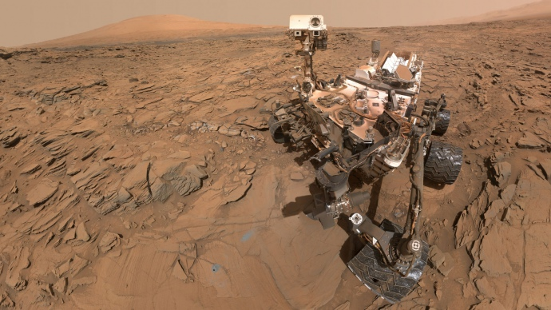
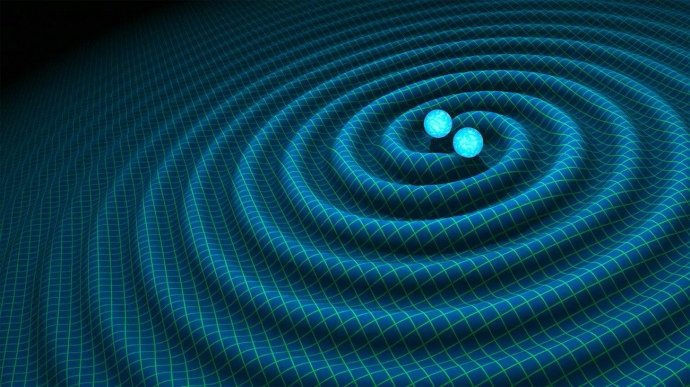

Будь-яке дослідження космічних об'єктів триває роками, а його результати зазвичай зрозумілі лише вченим.
ЕП зібрала досягнення космічної індустрії останніх років і спитала в експертів, чому ці відкриття важливі.
12 квітня світ відзначає Міжнародний день польоту людини в космос. Що цікавого відбулося в галузі за останні десять років?
Основні положення:
- Знімок горизонту подій чорної діри
- Дослідження Марса за допомогою Curiosity
- Відкриття гравітаційних хвиль
Знімок горизонту подій чорної діри
Гравітаційні поля чорних дір настільки сильні, що вони всмоктують всередину все, що туди потрапляє, включаючи випромінювання, газ і планети. Чорні діри змінюють геометрію простору і часу. Вони невидимі, тому що не пропускають світло. Кордон чорної діри називають горизонтом подій.
Міжнародний проект Event Horizon Telescope 10 квітня 2019 року представив перший знімок горизонту подій чорної діри.
Прес-конференція проходила в сімох країнах одночасно. Радіотелескопи в різних частинах Землі збирали зображення, які потім об'єднали. Телескопи досліджували дві надмасивні чорні діри: Стрілець А* та М87.
Знімок тіні чорної діри допоможе встановити, що відбувається з об'єктами поблизу неї в момент, коли матерія обертається на високих швидкостях.
"Ще понад 100 років тому Ейнштейн в загальній теорії відносності (ЗТВ) передбачив існування чорних дір. Зараз ми можемо в цьому переконатися. Розвиток технологій досяг такої точки, коли ми можемо побачити знімок настільки далекого і складного для відображення об'єкта.
Кілька десятків років тому це здавалося неможливим, але дворічне дослідження показало: горизонт подій чорних дір повинен являти собою коло, в центрі якого розташована чорна діра.
Людство змогло зібрати достатньо даних, щоб не тільки отримати фізико-математичну модель такого грандіозного і масштабного об'єкта, а й вимірювати його розмір, масу і вплив на зовнішній простір.
Відбулася епохальна подія для світової космічної індустрії", — вважає Андрій Музиченко, продакт-менеджер українського ком'юніті Space1OOO, мета якого — сформувати культуру краудфандингу для будівництва "космічного" архітектурного об'єкта.
Перші дані з телескопів надійшли два роки тому. Про це повідомили Європейська південна обсерваторія і Національний науковий фонд США.
Дослідження Марса за допомогою Curiosity
Наукова лабораторія Марса і марсохід Curiosity — найбільш амбітна місія дослідження Червоної планети. У 2012 році Curiosity сів на Марс, щоб з'ясувати, чи підходить він для життя. Апарат провів на планеті 2 370 марсіанських діб. За цей час він подолав шлях від кратера Гейла до гори Шарп.
Серед результатів — дані про небезпечний для астронавтів рівень радіації. Також Curiosity з'ясував, що колись атмосфера на Марсі була більш щільною, а води було більше. На планеті могло існувати життя: хімічний склад Марса в давнину дозволяв мікроорганізмам там жити.
Відкриття гравітаційних хвиль
Існування гравітаційних хвиль передбачив Ейнштейн у 1916 році. Виявити їх вдалося лише через сто років, 11 лютого 2016 року. Над виявленням гравітаційних хвиль фізики працювали кілька десятиліть.
Загальна теорія відносності Ейнштейна пропонує розглядати час і простір як одне ціле. Гравітаційні хвилі — це брижі на поверхні часу і простору, які спотворюють їх. У 2015 році вперше відбулася пряма реєстрація хвиль, оголосили вчені обсерваторії LIGO.
"За вирішальний внесок в детектор LIGO і спостереження гравітаційних хвиль" у 2017 році троє американських дослідників отримали Нобелівську премію.
"Відкриття гравітаційних хвиль підтвердило одне з передбачень загальновизнаної теорії гравітації — ЗТГ, сформульованої Ейнштейном близько століття тому і використовується, наприклад, для точного калібрування супутників GPS-навігації та розрахунків траєкторій космічних тіл.
Виявлено вже кілька джерел гравітаційних хвиль. Одне з них, завдяки реєстрації одночасного сплеску електромагнітного випромінювання, вдалося ототожнити із злиттям двох нейтронних зірок.
